Credenciamento e Acolhida
Recepção
Mural interativo: “Por que escolhi a área de STEM – Ciência, Tecnologia, Engenharia e Matemática?”
Este evento promove a integração e a troca de experiências entre projetos e iniciativas que incentivam a participação de mulheres, meninas e pessoas que se identificam com o feminino nas áreas de STEM. É um espaço de visibilidade, reflexão e fortalecimento de redes, dedicado ao protagonismo, à equidade e à construção de um ambiente acadêmico e científico mais inclusivo.
Promover a integração e a troca de experiências entre projetos de extensão e iniciativas voltadas à participação mulheres, meninas e pessoas que se identificam com o feminino nas áreas de Ciências, Tecnologia , Engenharia e Matemática (STEM);
Valorizar e dar visibilidade às trajetórias de estudantes, professoras e profissionais que atuam na área de STEM, fortalecendo o protagonismo das mulheres;
Incentivar o engajamento de alunas do ensino técnico e superior em atividades acadêmicas voltadas à equidade de gênero;
Refletir sobre os desafios enfrentados por meninas e mulheres na área de STEM, debatendo estratégias para superação de barreiras estruturais, culturais e institucionais;
Difundir ações e práticas bem sucedidas de promoção de equidade nas instituições federais de ensino superior de Minas Gerais, com foco na permanência e no empoderamento de meninas e mulheres na área de STEM;
Fortalecer redes de colaboração entre instituições de ensino, estudantes, profissionais e projetos comprometidos com a equidade e inclusão no meio acadêmico e científico.
Recepção
Mural interativo: “Por que escolhi a área de STEM – Ciência, Tecnologia, Engenharia e Matemática?”
Boas-vindas da coordenação do projeto Meninas Digitais - UFSJ e da instituição anfitriã. Apresentação do Programa Meninas Digitais - SBC e seus impactos.
Convidada: Representante do Comitê Gestor do Programa Meninas Digitais da SBC. Professora: Alessandreia Marta de Oliveira
Apresentação de trabalhos submetidos por alunas e docentes sobre iniciativas, pesquisas e experiências ligadas ao incentivo à presença mulheres e meninas na área de STEM, acompanhada de café e troca de experiências entre participantes e autoras.
Tema: “Você pode estar onde quiser: trajetórias femininas na área de STEM”
Convidada: Cintia Esteves, profissional da área de STEM.
Projeto: Meninas Digitais UFJF
Mediadoras: Julia Campos, Geisielen Gomes e Isabela Gomes
Projeto: Meninas no Mundo Digital UFJF
Mediadoras: Eduarda Miguel e Mell Feital
Projeto: Meninas Programadoras JF
Mediadora: Larissa Machado e Isadora de Souza
Projeto: Meninas Digitais UFSJ
Mediadoras: Isadora Sidnei e Marcelly Gabarrona
Convidadas: Barbara de Melo Quintela, Daniele Pires Magalhaẽs, Tatiane Ornelas Martins Alves
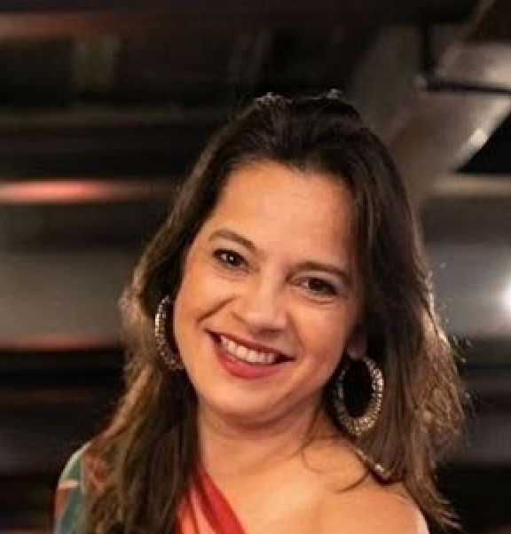
Possui graduação em Matemática Bacharelado em Informática pela Universidade Federal de Juiz de Fora, mestrado em Engenharia de Sistemas e Computação pela Universidade Federal do Rio de Janeiro e doutorado em Computação pela Universidade Federal Fluminense. Professora associada da Universidade Federal de Juiz de Fora. Experiência e interesse em Educação em Computação, Banco de Dados, Engenharia de Software e Mulheres em Computação. Coordenadora dos projetos ProgramADA, Meninas Programadoras JF, Escola de Games UFJF e Pontes Digitais da UFJF. Vice coordenadora do Comitê Gestor da Comissão Especial de Educação em Computação (CEduComp) e membro do Comitê Gestor da Comissão Especial de Informática na Educação. Membro do Comitê Gestor do Programa Meninas Digitais da SBC (Sociedade Brasileira de Computação). Membro da Comissão da Diretoria de Educação da SBC. Coordenadora Adjunta do Mestrado Profissional em Ensino de Computação em Rede Nacional - PROFCOMP.
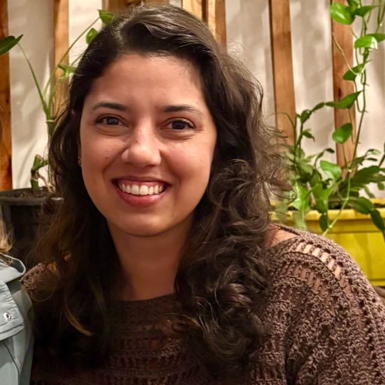
Professora na Universidade Federal de Juiz de Fora (desde 2018), doutora em Modelagem Computacional pelo PPGMC/UFJF (2015) trabalhando com modelos matemáticos aplicados à saúde por mais de uma década. No momento integra o Comitê Assessor de Pesquisa de Computação e Engenharias da UFJF e, está vice-Coordenadora do Programa de Pós-graduação em Modelagem Computacional. Além de coordenar projetos de extensão que promovem ensino de Pensamento Computacional para meninas do Ensino Fundamental e Médio visando reduzir a diferença de gênero nas áreas de Computação, Exatas e Engenharias. Atuou como Relatora do Comitê de ética em Pesquisa em humanos da UFJF e vice-chefe do Departamento de Ciência da Computação. Trabalhou como Assistente de Pesquisa Visitante durante o Doutorado Sanduíche no Laboratório Nacional de Los Alamos (NM-EUA) onde focou em modelos matemáticos de dinâmica viral. Realizou pós-doutorado na Universidade de Bologna onde colaborou no projeto desenvolvimento de uma nova versão do VPH-HF (v3) - Virtual Physiological Human - Hypermodeling Framework, uma ferramenta computacional para orquestrar a execução de modelos matemáticos multiescala aplicado a tumores sólidos. Seus interesses de pesquisa incluem modelagem matemática utilizando equações diferenciais para medicina in silico e imunologia computacional.
Profissional de tecnologia com mais de 30 anos de experiência. Bacharel em Informática pela UFJF, com especialização em Gestão de Pessoas pelo SENAC-SP, especialização em Proteção de Dados pela FGV-RJ, MBA em Big Data, Ciência de Dados e Inteligência Artificial pela PUC-RS e cursando MBA em Neurociência na PUC-RS. Como mentora e palestrante, compartilho minha experiência adquirida ao longo da minha carreira em empresas tais como: Nestlé, Avon, Telefônica|Vivo, Zurich Seguradora, Grupo Carrefour e Nubank.
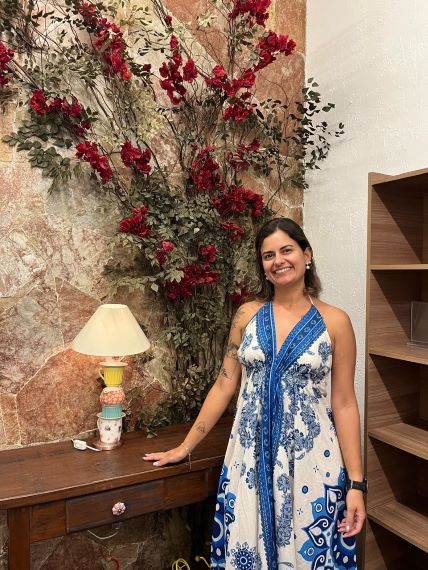
Doutora em Modelagem Computacional pela Universidade Federal de Juiz de Fora (2021). Mestra em Modelagem Computacional pela Universidade Federal de Juiz de Fora (2014). Licenciada em Matemática pela Universidade Federal de São João del Rei (2012). Foi professora de graduação dos cursos de Engenharia Ambiental, Engenharia Civil, Engenharia Elétrica e Engenharia de Produção do Centro de Engenharias Doctum Juiz de Fora, de 2019 a 2021. Foi professora militar como Segundo Tenente do Exército Brasileiro, atuando no Ensino Fundamental do Colégio Militar de Juiz de Fora (CMJF). Foi professora do Centro de Estudos Aprendiz em Barbacena, lecionou Matemática para o Ensino Médio, Metaverso Educacional para o Ensino Fundamental e foi a responsável pela Robótica no Ensino Fundamental e Médio. Foi professora substituta na Universidade Federal de São João Del Rei (UFSJ), no Departamento de Matemática (DEMAT) Atualmente é professora visitante no Instituto Federal de Minas Gerais (IFMG), Campus Ouro Preto. Foi tutora EAD no curso de Licenciatura em Matemática a distância da UFJF. Está fazendo parte do Grupo de Pesquisa "Análise e Modelagem de Dados Educacionais (GrAMDE)", certificado pelo CNPq.
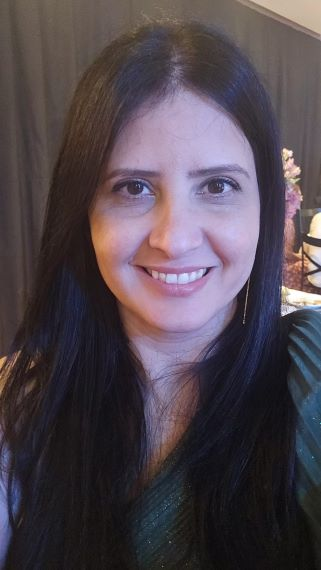
Tatiane Ornelas Martins Alves é doutoranda em Informática pela Pontifícia Universidade Católica do Rio de Janeiro (PUC-Rio), onde desenvolve pesquisas sobre o uso de Large Language Models (LLMs) no apoio à análise qualitativa em Engenharia de Software. É Analista de Tecnologia da Informação na Universidade Federal de Juiz de Fora (UFJF) e Assessora Acadêmica e de Extensão na Faculdade Metodista Granbery, atuando na gestão acadêmica, coordenação de projetos e formação em cursos da área de tecnologia. Sua experiência integra tecnologia, pesquisa aplicada e educação, com atuação em projetos que conectam inovação, metodologias científicas e transformação digital no contexto acadêmico.


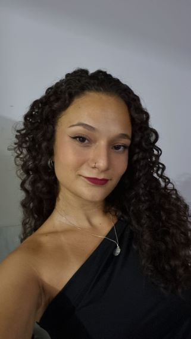
Para participar do evento, basta clicar no botão abaixo e preencher o formulário com as suas informações. A participação é aberta a estudantes de todos os géneros.
Sessão de pôsteres com resumos expandidos de iniciativas que promovem a participação de meninas e mulheres em STEM, apresentados no evento.
Datas importantes:
Data limite para submissão de artigos: 02 de março de 2026
Notificação dos trabalhos aceitos: 13 de março de 2026
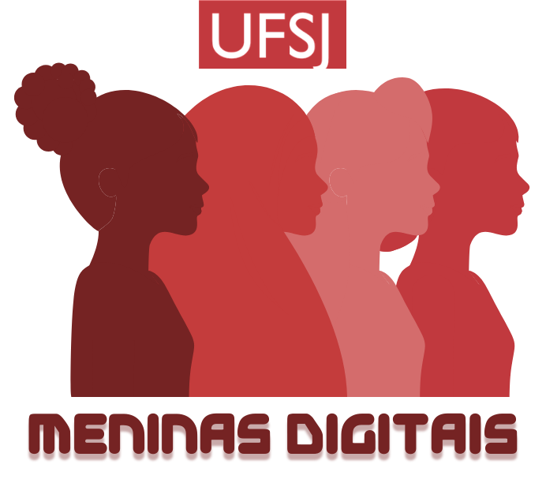
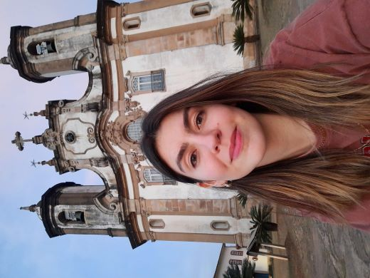
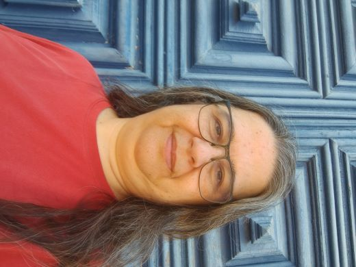
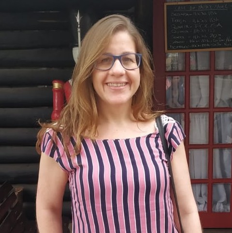
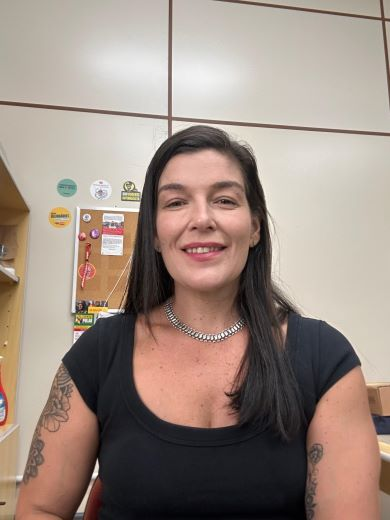
Este evento só é possível graças ao apoio de parceiros que acreditam na inovação, na educação e na transformação social.
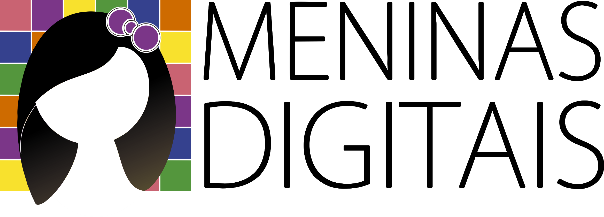